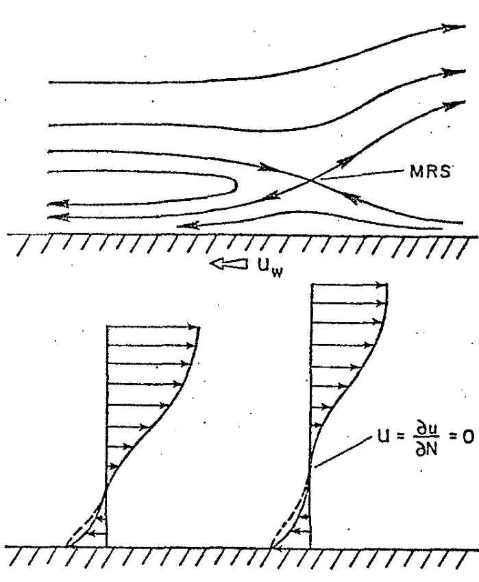
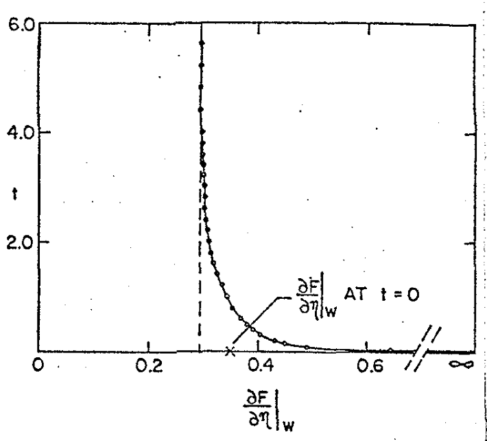
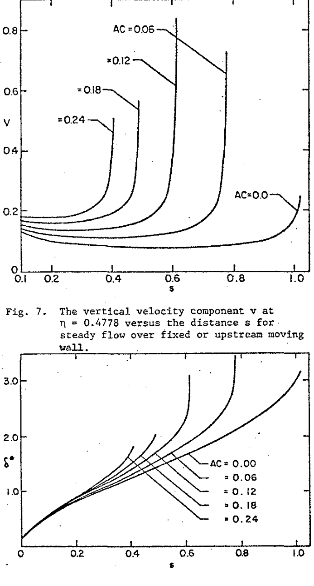
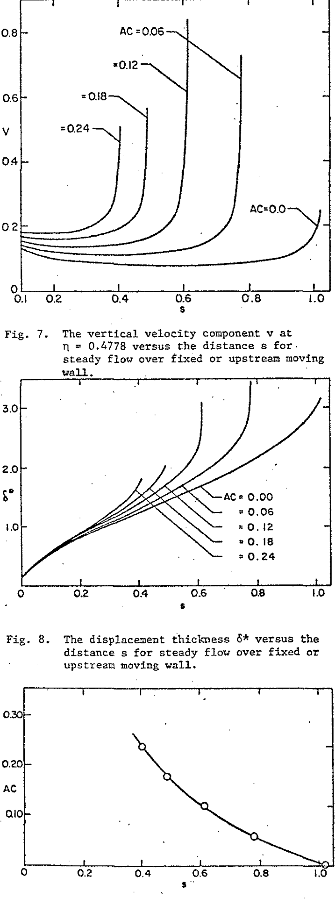

01中文摘要
首次数值研究定常外流下上游运动壁面的层流边界层与分离。对脉冲启动的上游运动壁面积分非定常边界层方程，采用上风差分穿过紧贴壁面的薄回流层，并积分至大时间达到定常状态。外流取Howarth线性减速分布Ue=1−As（A=0.12），壁速uw=−ACs。计算发现，按Sears–Telionis定义的分离点随时间向上游移动，渐近到达一个具备全部MRS分离特征的站点；该处出现Goldstein型奇异性，壁面剪切、法向速度与位移厚度呈奇异增长。作者据此认为MRS判据对上游运动壁面成立。
02阅读说明
AIAA 会议论文（1976，8 页），数值+理论型。材料为 OCR 全文与 5 张抓图；OCR 公式区错位严重，式(1)–(28) 经原 PDF 3 页及裁剪图核对，式(12)非定常项系数与式(29)–(30)离散细节受限于材料无法确认。实验对比仅为定性，网格与时间步未给出。页码均为 PDF 页码。 文章类型：期刊
03一句话核心与三句话摘要
首次数值再现上游运动壁层流分离：奇点向上游迁移并渐近 MRS 点，呈 Goldstein 奇异性。
- 论文首次用非定常边界层方程数值求解定常外流下上游运动壁的层流边界层与分离，采用壁面脉冲启动和上风差分穿过逆流区。 原文明确
- 计算得到的分离奇点先短暂驻定，随后向上游迁移并渐近于满足 MRS 判据的位置；壁面剪应力、垂向速度和位移厚度在分离点呈 Goldstein 型奇异。 原文明确
- 作者据此认为 MRS 判据适用于上游运动壁，边界层解只能近似该判据，结果为 Sears–Telionis 非定常分离模型提供了支持。 AI概括
04核心内容清单
| 要点 | 类型 | 重要性 | 原文依据 | 属性 |
|---|---|---|---|---|
| 首次给出定常外流下上游运动壁层流边界层与分离的数值解。 | 研究定位 | A | p.2 摘要与第I节 | 原文明确 |
| 采用非定常边界层方程加壁面脉冲启动，并用上风差分穿过覆盖全壁的薄逆流层。 | 方法 | A | p.2 摘要；p.4 第IV节 | 原文明确 |
| 外流取 Howarth 线性减速 U_e=1−As（A=0.12），壁速 u_w=−ACs，t=0 脉冲启动。 | 来流与边界条件 | A | p.3 式(18)–(19) | 原文明确 |
| 固定壁稳态解作为初场，其零剪应力分离点 S_zf=0.121/A=1.0。 | 初场 | A | p.4 式(20)–(22) | 原文明确 |
| 小时间用 ∂u_i/∂t=∂²u_i/∂N² 的 erfc 解启动，以绕过数值格式无法分辨涡片的困难。 | 启动处理 | A | p.4 式(23)–(27) | 原文明确 |
| s=0.4、AC=0.18 的壁面剪应力在脉冲后瞬时无穷大，t>4.0 后趋于常数，证明达到稳态。 | 稳态判据 | A | p.5 图3 | 原文明确 |
| 分离奇点短时驻定，随后向上游移动并渐近固定位置；该位置被解释为稳态上游运动壁的分离点。 | 核心现象 | A | p.5 第V节 | 原文明确 |
| s=0.495、t=8.0、AC=0.18 的近分离剖面呈修正 MRS 形状，实际分离点位于 s=0.495–0.500。 | 剖面证据 | A | p.5–6 图4、图5 | 原文明确 |
| 壁剪应力斜率趋于无穷、v 在分离点前发散、δ* 急增，三者共同指示 Goldstein 型奇异性。 | 奇异性证据 | A | p.5–6 图6–图8 | 原文明确 |
| 分离点随壁面速度（AC）增大向上游移动；图9给出不同 AC 的 MRS 分离点位置。 | 参数趋势 | B | p.6–7 图9 | 原文明确 |
| 作者论证 MRS 判据对上游运动壁有效，但边界层解只能近似 MRS，因为分离邻域内边界层近似逐渐失效。 | 判据评价 | B | p.5 第V节 | 原文明确 |
| 结果支持 Sears–Telionis 的非定常分离理论。 | 理论意义 | B | p.7 第VI节 | 原文明确 |
05引言：研究问题与领域缺口
分离被定义为流体大规模脱离壁面、边界层近似失效并形成尾迹；Prandtl 零剪应力判据在非定常或运动壁情形可能失效。Sears 提出以分离点观察者坐标下的驻点与分界流线定义非定常分离；Moore、Rott、Sears 对运动壁提出 ∂u/∂y=0 且 u=0 的 MRS 判据。固定壁与下游运动壁已有数值研究，但上游运动壁因非循环逆流区无法用常规下游推进格式积分，既无理论处理也无数值解（p.2 第I节）。本文目标是解非定常边界层方程至大时间稳态，检验 MRS 判据与 Goldstein 奇异性（p.2 摘要）。
06流动条件与几何构型
| 项目 | 数值/描述 | 依据 | 备注 |
|---|---|---|---|
| 流体与流动假设 | 二维、不可压、层流边界层，常物性；边界层近似在分离邻域逐渐失效 | p.2–3 第II节；p.5 第V节 | |
| 外流速度分布 | U_e(s)=1−As，A=0.12（Howarth 线性减速） | p.3 式(18) | |
| 壁面运动 | t=0 从静止脉冲启动，壁速 u_w(s)=−ACs，AC>0（上游运动） | p.3 式(19) | |
| 参考固定壁分离点 | S_zf=0.121/A=1.0 | p.4 | |
| 详细算例 | AC=0.18；图3取 s=0.4，图4/5取 s=0.495、t=8.0 | p.5–6 图3–图5 | |
| 时间离散 | 一阶时间差分，∂F/∂t≈[F(s,η,t)−F(s,η,t−Δt)]/Δt；Δt 数值文中未提及 | p.4 式(28) | |
| 空间离散 | ξ 方向逆流区采用上风差分；网格规模与步长文中未提及 | p.4 第IV节、式(30) | |
| 壁速扫描 | 图6–图9给出多个 AC 的结果；除 AC=0.18 外，各曲线对应数值在 OCR 文本中不可读 | p.5–7 图6–图9 | |
| 来流/几何 | 定常外层无粘流，无几何外形细节；以 s 为流向坐标 | p.2–3 |
07核心现象与关键参数
| 参数 | 定义 | 数值 | 关系/说明 | 依据 |
|---|---|---|---|---|
| A | Howarth 外流线性减速参数，U_e=1−As | 0.12 | S_zf=0.121/A=1.0 | p.3 式(18)；p.4 |
| AC | 壁面速度幅值参数，u_w=−ACs | 重点算例 0.18；其余扫描值部分不可读 | AC 越大分离点越靠上游（图9） | p.3 式(19)；p.5–7 |
| S_zf | 固定壁稳态零剪应力分离点 | 1.0 | A=0.12 时由 0.121/A 得 | p.4 |
| S_MRS | 上游运动壁稳态 MRS 分离点 | AC=0.18 时约位于 s=0.495–0.500 之间 | S_MRS<S_zf | p.5–6 图4/5 |
| t_steady | 达到稳态的时间 | t>4.0（s=0.4、AC=0.18 的壁剪应力趋于常数） | 时间推进至大 t 取稳态 | p.5 图3 |
| Re | 雷诺数 | Re=U∞L/ν；具体数值文中未提及 | N 与 v 以 √Re 拉伸 | p.3 第II节 |
| β | 压力梯度参数 | β=(2ξ/U_e)dU_e/dξ | 出现在变换后的动量方程 (12) | p.3 式(13) |
08方法与数据
二维不可压层流边界层方程 (1)–(2)，以 U∞、L 无量纲化，Re=U∞L/ν；边界/初始条件 (3)–(6)。采用修正 Görtler 变换 (7)–(10)：ξ=∫U_e ds，η=U_e N/√(2ξ)，F=u/U_e，V=√(2ξ)v/U_e+(2ξ/U_e)∂F/∂s，得到连续性 (11) 与动量方程 (12)、压力梯度参数 (13)。外流取 Howarth 线性减速 U_e=1−As，A=0.12（式18）；t=0 壁面脉冲启动，随后 u_w=−ACs（式19）。先以固定壁稳态解 (20)–(22) 为初场，其零剪应力分离点 S_zf=0.121/A=1.0（p.4）。小时间用 ∂u_i/∂t=∂²u_i/∂N² 的 erfc 解 (23)–(27) 启动，避免数值格式无法分辨涡片；时间导数用一阶差分 (28)，动量方程写成稳态型 (29)，ξ 方向逆流区用上风格式 (30)，稳态子程序取自 Werle–Davis（p.4 第IV节）。
| 项目 | 内容 | 依据 | 备注 |
|---|---|---|---|
| 控制方程 | 二维不可压非定常边界层连续性 (1) 与动量 (2) 方程 | p.3 第II节 | |
| 坐标变换 | 修正 Görtler 变换 (7)–(10)，引入 ξ、η、F、V | p.3 | |
| 初始稳态解 | 固定壁、同一 Howarth 外流的稳态解 (20)–(22)，用 Werle–Davis 稳态子程序计算 | p.4 第IV节 | |
| 脉冲启动解析解 | 忽略小时间对流项，解 ∂u_i/∂t=∂²u_i/∂N²，得 u_i=u_H−ACs·erfc[N/(2√t)] (27) | p.4 式(23)–(27) | |
| 时间推进 | 一阶时间差分 (28)，把非定常动量写成稳态型 (29)，逐时间层推进 | p.4 | |
| 逆流区处理 | ξ 方向导数在上游站采用上风格式 (30)，使积分可穿过负 u 区域 | p.4 第IV节 | |
| 分离判据 | 以 Goldstein 奇异性（壁剪应力斜率、v、δ* 发散）定位分离，并与 MRS 判据比较 | p.4–6 第V节 | |
| 验证 | 固定壁稳态解与 Howarth 参考计算核对；分离位置与 Vidal/Ludwig 实验定性比较 | p.4；p.6–7 第VI节 |
09核心推导与公式
用修正 Görtler 变换把非定常边界层方程化为 (ξ,η,t) 上的抛物型系统；先求固定壁稳态解作初场，再对脉冲启动的上游运动壁用 erfc 近似启动，沿时间推进至稳态，以 MRS 点和 Goldstein 奇异性定位分离。
关键假设
- 二维、不可压、层流边界层，物性为常数（文中未讨论压缩性与变物性）。
- 外层无粘流定常，U_e(s)=1−As，A=0.12。
- 壁面在 t=0 脉冲启动，随后以 u_w=−ACs 向上游运动。
- 小时间对流项远小于非定常与黏性项，可用 ∂u_i/∂t=∂²u_i/∂N² 近似。
- 边界层近似在分离邻域逐渐失效，MRS 点处 ∂²u/∂s² 不可忽略。
推导过程
以 U∞、L 无量纲化并引入 Re=U∞L/ν 后，连续性与流向动量方程为式(1)、(2)。
壁面无滑移且法向速度为零，远场趋于外流速度；初始时刻给定 u_I、v_I。
引入流向积分变量 ξ、相似变量 η，以及无量纲速度 F 和变换后的法向速度 V。
连续性化为式(11)。动量方程化为式(12)：含非定常项、2ξF∂F/∂ξ、V∂F/∂η、压力梯度项 β(F²−1) 与 ∂²F/∂η²。受限于扫描 OCR，式(12)非定常项的精确系数无法确认，此处不抄录其系数；β 由式(13)定义。
取 Howarth 线性减速外流；壁面在 t=0 脉冲启动，速度线性增长并指向上游。
先解同一外流、固定壁的稳态边界层，作为 t=0+ 的初场；其零剪应力分离点为 S_zf=0.121/A，A=0.12 时等于 1.0。
脉冲启动瞬间形成覆盖全壁的涡片，数值格式无法分辨；忽略对流项后解非定常热传导型方程，得到用互补误差函数表示的启动解。
用式(28)的一阶时间差分把非定常动量写成式(29)的稳态型，再用稳态子程序逐层推进；在逆流区把 ξ 导数改为上风格式(30)，使推进方向与局部流动方向一致。式(29)系数与式(30)的精确差分形式受限于 OCR，无法确认。
适用边界：推导仅针对二维不可压层流与单一 Howarth 外流；边界层近似在分离邻域本身失效，故只能近似 MRS 判据。式(12)非定常项系数、式(29)–(30)的精确离散格式受限于扫描材料无法确认；网格、时间步与收敛判据文中未提及。
10结果：主要发现与关键证据
在 s=0.4、AC=0.18 处，壁面剪应力在脉冲启动后瞬时为无穷大，随后快速下降，t>4.0 后渐近常数，证明达到稳态（图3，p.5）。奇点位置在 t=0 与固定壁分离点 S_zf 重合，短时间驻定，随后向上游移动并渐近固定位置（p.5）。AC=0.18、t=8.0 时，s=0.495 的速度剖面已呈修正 MRS 形状，近壁 F≈0 邻域变平，实际分离点位于 s=0.495–0.500（图4、图5，p.5–6）。壁面剪应力随 s 的斜率在分离点前趋于无穷（图6），垂向速度 v 在 η=0.4778 处向分离点发散（图7），位移厚度 δ* 在分离点前急增（图8），三者共同指示 Goldstein 型奇异性（p.5–6）。图9给出不同壁面速度下 MRS 分离点位置，随 AC 增大向上游移动（p.6–7）。
| 发现 | 证据 | 证据类型 | 强度 | 位置 | 属性 |
|---|---|---|---|---|---|
| 壁面剪应力在脉冲启动后瞬时无穷大，t>4.0 后渐近常数，表明时间推进得到真正的稳态解。 | s=0.4、AC=0.18 的 ∂F/∂η|_w 随时间曲线（图3）；正文明确 t>4.0 后趋于常数。 | 稳态证据 | 强 | p.5 图3 | 原文明确 |
| 分离奇点位置先短时驻定，随后持续向上游移动，最终渐近固定位置。 | 正文对奇点轨迹的描述；该渐近位置被解释为稳态上游运动壁的分离点。 | 核心现象 | 强 | p.5 第V节 | 原文明确 |
| 近分离速度剖面呈修正 MRS 形状，AC=0.18、t=8.0 时实际分离点位于 s=0.495–0.500。 | 图4（s=0.495、t=8.0 的全剖面）与图5（近壁细节）显示 F≈0 邻域变平，且图注明确分离点区间。 | 剖面证据 | 强 | p.5–6 图4、图5 | 原文明确 |
| 壁面剪应力随 s 的斜率在分离点前趋于无穷，是 Goldstein 型奇异性的直接标志。 | 图6 不同 AC 的壁剪应力随 s 曲线；正文指出斜率最终变为无穷。 | 奇异性证据 | 强 | p.5–6 图6 | 原文明确 |
| 垂向速度 v 在分离点前发散，位移厚度 δ* 同时急增，与 Goldstein 奇异性一致。 | 图7（η=0.4778 处 v 随 s）与图8（δ* 随 s）；正文明确“blowing up”和“abrupt increase”。 | 奇异性证据 | 强 | p.6–7 图7、图8 | 原文明确 |
| 分离点随壁面速度参数 AC 增大而向上游移动。 | 图9 给出不同壁速下的 MRS 分离点位置；具体坐标值受图件分辨率限制无法读取。 | 参数趋势 | 中 | p.6–7 图9 | 原文明确 |
| 作者认为 MRS 判据适用于上游运动壁，但边界层解只能近似该判据。 | 正文论证分离邻域内 ∂²u/∂s² 变得重要、边界层近似失效；因此 MRS 点处动量方程并不严格平衡。 | 判据评价 | 中 | p.5 第V节 | 原文明确 |
| 结果支持 Sears–Telionis 的非定常分离理论，并首次为上游运动壁情形提供数值证据。 | 结论段将 Goldstein 奇异位置与实验分离位置对应，并联系下游运动非定常分离。 | 理论意义 | 中 | p.6–7 第VI节 | 原文明确 |
11机制解释与论证链
上游运动壁在壁面附近注入与自由流反向的动量，使近壁速度剖面更易出现零速点并加速分离。t=0 的脉冲启动在壁面生成覆盖全壁的涡片，随后向流内扩散；在涡片层内 u<0，常规沿下游推进的边界层格式因非线性对流方向反转而失稳，上风差分则允许积分穿过该层。随时间推进，Goldstein 奇异点先从固定壁分离位置附近驻定，再向上游迁移，最终停在 MRS 判据（u=0 且 ∂u/∂y=0）满足的位置；该点同时是速度剖面拐点，壁面曲率必须为正，故需对经典 MRS 剖面作小修正。分离点邻域内 ∂²u/∂s² 增大并平衡压力梯度，标志边界层近似失效，因而数值解只能逼近而不能精确满足 MRS 判据。
12讨论：结论、贡献与局限
作者指出，上游运动壁使分离提前，S_MRS<S_zf；分离点邻域内被边界层方程忽略的 ∂²u/∂s² 变得重要并平衡压力梯度，因此边界层近似逐渐失效，MRS 判据虽适用，但边界层解只能尽可能逼近 MRS 剖面（p.5 第V节）。由于 MRS 点同时是拐点（∂²u/∂y²=0）且 u=∂u/∂y=0，在非零压力梯度下动量方程在 MRS 点本身并不平衡；作者以边界层近似在分离邻域失效来回应这一质疑（p.5）。Goldstein 奇异位置与实验观测的分离位置一致，支持 Sears–Telionis 模型（p.6–7 第VI节）。局限包括二维不可压、单一 Howarth 外流、无网格/时间步细节、实验仅定性比较。
作者结论
对定常外流下上游运动壁的层流边界层，作者首次给出数值解并证明：脉冲启动后流动可推进至稳态；分离奇点从固定壁零剪应力点向上游迁移并渐近于满足 MRS 判据的位置；该位置同时出现壁剪应力斜率无穷、v 发散和 δ* 急增的 Goldstein 型奇异性。AC=0.18 时分离点位于 s=0.495–0.500，小于固定壁的 S_zf=1.0。作者据此判定 MRS 判据对上游运动壁有效，边界层解只能近似它，并认为结果支持 Sears–Telionis 模型。
主要贡献
- 首次数值求解定常外流下上游运动壁的层流边界层与分离问题。
- 给出用非定常方程、脉冲启动和上风差分绕过非循环逆流区的可计算方法。
- 用壁剪应力、v 和 δ* 的奇异行为把 MRS 分离点与 Goldstein 奇异性对应起来。
- 为 Sears–Telionis 非定常分离理论提供上游运动壁情形的支持。
局限与未解决问题
仅限二维、不可压、层流边界层与单一 Howarth 线性减速外流；A=0.12、AC 取值有限。边界层近似在分离邻域失效，MRS 判据只能近似满足。网格规模、时间步、收敛判据均未给出，无法评估离散误差。与 Vidal/Ludwig 实验仅为定性比较，未给出分离位置或剖面的定量误差。未讨论雷诺数、壁速分布形状、三维性、压缩性与湍流的影响。式(12)非定常项系数及式(29)–(30)细节受限于 OCR 无法确认。
13对高速流动与工程的意义
在 1970 年代非定常分离理论争议中，本文首次把“上游运动壁稳态分离”化为可算问题，并用同一套解同时展示 MRS 判据与 Goldstein 奇异性，从而把固定壁、下游运动壁与上游运动壁三类情形纳入统一图像。其数值策略（脉冲启动 + 上风差分穿过逆流层）对后续非定常边界层反问题计算有方法学意义；结论也为 Sears–Telionis 分离定义提供了运动壁侧的证据。
14核心图件




15可引用原文素材
| 原文短句 | 可支持的观点 | 位置 | 使用建议 |
|---|---|---|---|
| “numerically for the first time” | 首次数值研究上游运动壁分离 | p.2 摘要 | 研究定位 |
| “the point of zero wall shear” | MRS 判据区别于 Prandtl 零剪应力判据 | p.2 第I节 | 判据背景 |
| “location of the singularity” | 以奇点位置追踪分离 | p.5 第V节 | 现象描述 |
| “appeared to be stationary” | 奇点短时间驻定 | p.5 第V节 | 现象描述 |
| “started traveling upstream” | 奇点随后向上游迁移 | p.5 第V节 | 核心现象 |
| “becomes infinite” | 壁剪应力斜率在分离点发散 | p.5 第V节 | 奇异性 |
| “criterion is valid” | 作者判定 MRS 判据适用 | p.5 第V节 | 结论 |
| “separation point is approached” | δ* 等在分离点前急增 | p.6 第V节 | 奇异性 |
16最终核验
| 核验项 | 结论 |
|---|---|
| 仅基于全文 | 仅使用 bundle 全文、图注与原 PDF 公式页；未引入外部文献或教科书推导。1078 的式(1)–(28) 经原 PDF 3 页及裁剪图核对，其余仅据 OCR 文本。 |
| A 级要点有依据 | 所有 A 级要点均由原文页码、图、公式直接支撑：图3（稳态）、图4/5（分离区间）、图6–8（奇异性）、式(18)–(22)；未把不可读的图9数值写成确定值。 |
| 属性标注 | 逐条标注【原文明确】【AI概括】【AI推断】；A 级要点均为原文明确或图注直接给出，B 级为作者论证或趋势性结论。 |
| 覆盖范围 | bundle 508 行已读到 EOF；IMRaD、条件、关键参数、方法、推导链、图件、结论、局限与开放问题均已覆盖。 |
| 无编造 | 未编造网格、时间步、图9具体分离点数值、式(12)非定常项系数与式(29)–(30)离散格式；缺失处写“文中未提及”或“受限于材料，无法确认”。 |
需回原文确认
- 图9中各 AC 对应的具体分离点数值因图件分辨率/OCR 无法读取，能否从原始数据表获得？
- 式(12)非定常项系数及式(29)–(30)的精确离散格式在扫描文本中不可辨，需原 PDF 高分辨率核对。
- 计算网格、时间步与收敛判据文中未给出，结果对离散参数的敏感性未知。
- 与 Vidal/Ludwig 实验仅作定性比较，缺少分离位置与速度剖面的定量误差评估。
- 仅一条 Howarth 外流与有限 AC，分离点对雷诺数、外流曲率和壁速分布的依赖未讨论。
- 三维、可压缩或湍流情形下 MRS 判据与 Goldstein 奇异性的适用性未知。
17关联文献
依据标签、板块、构型与作者脉络自动关联，可据此追踪同一问题的前序与后续工作。
18引用格式
选择期刊风格后复制；出处保留原刊名。BibTeX 可直接用于 LaTeX。
引用格式
Tsahalis, D. 1976 Laminar boundary-layer separation from an upstream moving wall. 9th Fluid and PlasmaDynamics Conference. https://doi.org/10.2514/6.1976-377
PDF上传 PDF 并更新本页
本页缺少全文、摘要或图件时，可在浏览器本地补入 PDF。解析完全在本机完成，不上传网络；完成后会更新本页的 PDF 打开链接、原摘要、IMRaD 机器抽取、关键句与含图页面。复杂的公式语义与中文深度解读仍以原文和既有精读记录为准。
Zotero 笔记摘录
（不引用）存在明显错误，其结论是MRS准则成立